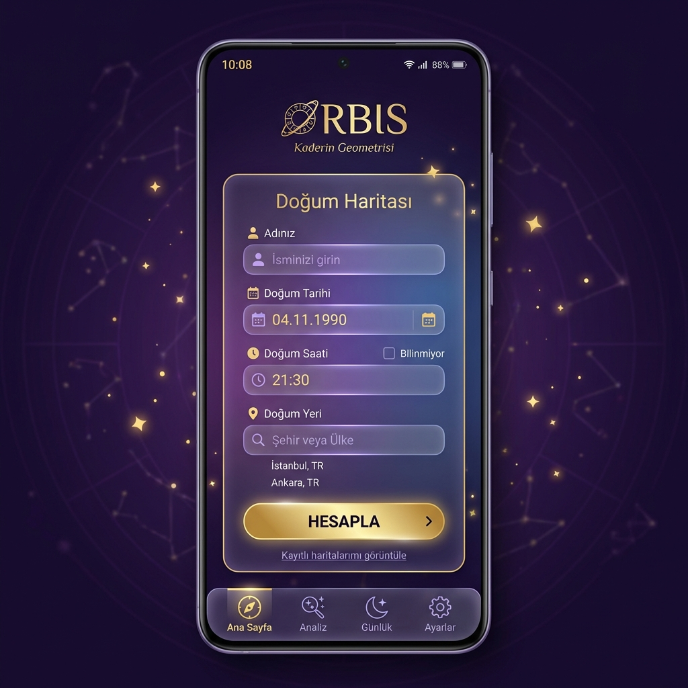
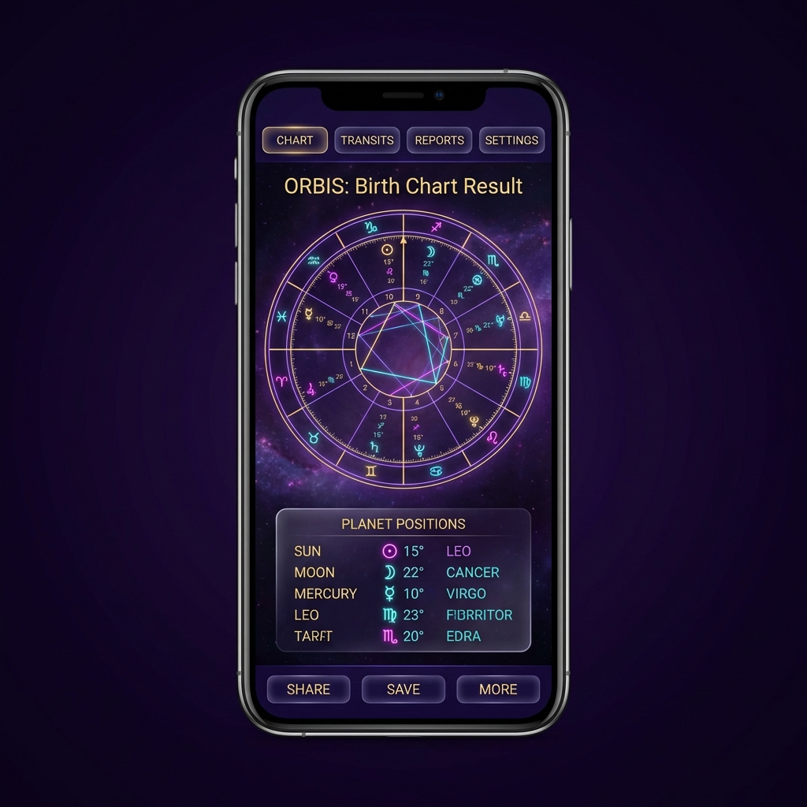
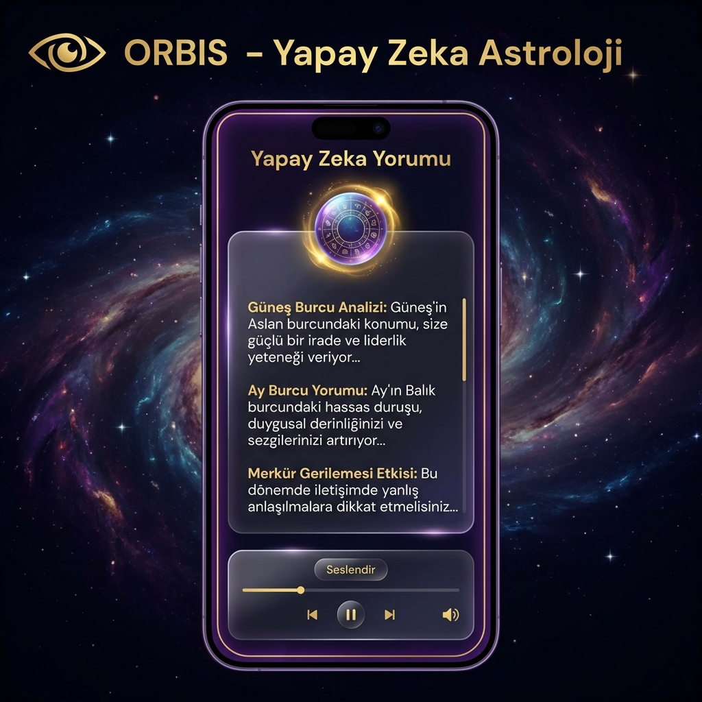

Kaderin Geometrisi
Yapay zeka destekli astroloji platformu ile doğum haritanızı keşfedin. Kişiselleştirilmiş kozmik yorumlar, transit analizler ve daha fazlası.
ORBIS ile astrolojinin derinliklerine dalın
Yapay zeka, doğum haritanızı analiz ederek kişiselleştirilmiş ve derinlemesine yorumlar sunar.
Gezegen pozisyonları, ev yerleşimleri ve açı analizleri ile detaylı natal chart hesaplama.
Güncel gezegen geçişlerini natal haritanızla karşılaştırarak gelecek öngörüleri alın.
Hint astrolojisi hesaplamaları, Nakshatra analizi ve Dasha dönemleri.
AI yorumlarını Türkçe sesli okuma ile dinleyin. Arka planda çalma desteği.
Google hesabınızla giriş yapın, verileriniz tüm cihazlarınızda senkronize olsun.
3 kolay adımda kozmik yolculuğunuza başlayın
İsminizi, doğum tarihinizi, saatinizi ve doğum yerinizi girin. Ne kadar doğru bilgi, o kadar isabetli yorum.
ORBIS, Swiss Ephemeris kullanarak hassas gezegen pozisyonlarını hesaplar ve görsel haritanızı oluşturur.
15+ farklı analiz kategorisinde yapay zeka destekli kişiselleştirilmiş yorumlarınızı okuyun veya dinleyin.
ORBIS'in kozmik dünyasına göz atın



Hayatınızın her alanı için kozmik rehberlik
Gerçek doğum haritası verilerinden üretilmiş örnek AI yorumları
"Güneşiniz Aslan burcunda parıldıyor. Doğal bir lidersiniz, sahneye çıkmak ve takdir görmek sizin için hayati önem taşıyor. Yaratıcılığınız sınır tanımaz; sanat, tiyatro veya herhangi bir kendini ifade alanında parlayabilirsiniz. Kalbiniz cömerttir, sevdikleriniz için her şeyi yaparsınız..."
"Ayınız kendi evinde, Yengeç'te. Duygusal derinliğiniz ve sezgileriniz olağanüstü güçlü. Anılar sizin için kutsal, geçmişe derin bir bağ hissedersiniz. Aileniz ve yuvanız güvenlik kaynağınız. Başkalarının duygularını adeta okuyabilirsiniz..."
"Kariyer eviniz Oğlak'ta, Satürn yönetiminde. Başarıya giden yol sabır ve disiplinden geçiyor. Hızlı yükselişler yerine kalıcı, sağlam temelli bir kariyer için doğmuşsunuz. Yöneticilik, finans, hukuk veya devlet kurumları sizin alanınız olabilir..."
"Venüs'ünüz kendi evinde, Terazi'de yüceltiliyor. Aşkta armoni, denge ve estetik ararsınız. Romantik ilişkilerde adalet ve eşitlik sizin için vazgeçilmez. Çatışmadan kaçınır, uzlaşmacı bir partner olursunuz. Güzellik ve sanat sizin aşk diliniz..."
"Şu an Jüpiter natal Güneşinize 120° açı yapıyor - bu yılın en şanslı transit'lerinden biri! Genişleme, büyüme ve fırsatlar kapınızı çalıyor. Yeni projeler başlatmak, seyahat etmek veya eğitim almak için mükemmel bir dönem. Özgüveniniz zirve yapıyor..."
"18 yıllık Rahu Mahadasa'sındasınız. Bu dönem dünyadaki deneyimler, maddesel kazanımlar ve karmanızla yüzleşme zamanıdır. Teknoloji, yabancı kültürler ve alışılmadık yollar sizi çeker. Obsesif tutkular ve ani yaşam değişiklikleri yaşayabilirsiniz..."
Kendi doğum haritanız için kişiselleştirilmiş yorumlar alın
auto_awesome Şimdi Dene - ÜcretsizÜcretsiz başlayın, ihtiyacınıza göre yükseltin
ORBIS'i şimdi indirin ve kaderinizin geometrisini keşfedin